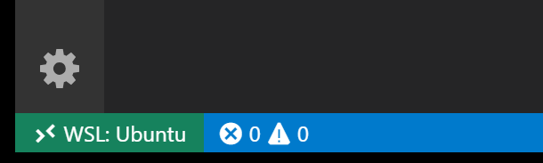
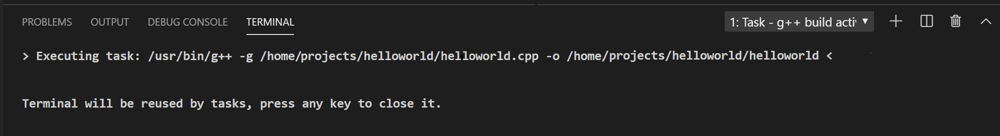

Using C++ and WSL in VS Code
In this tutorial, you will configure Visual Studio Code to use the GCC C++ compiler (g++) and GDB debugger on Ubuntu in the Windows Subsystem for Linux (WSL). GCC stands for GNU Compiler Collection; GDB is the GNU debugger. WSL is a Linux environment within Windows that runs directly on the machine hardware, not in a virtual machine.
Note: Much of this tutorial is applicable to working with C++ and VS Code directly on a Linux machine.
Visual Studio Code has support for working directly in WSL with the Remote - WSL extension. We recommend this mode of WSL development, where all your source code files, in addition to the compiler, are hosted on the Linux distro. For more background, see VS Code Remote Development.
After completing this tutorial, you will be ready to create and configure your own C++ project, and to explore the VS Code documentation for further information about its many features. This tutorial does not teach you about GCC or Linux or the C++ language. For those subjects, there are many good resources available on the Web.
If you have any problems, feel free to file an issue for this tutorial in the VS Code documentation repository.
Prerequisites
To successfully complete this tutorial, you must do the following steps:
Install Visual Studio Code.
Install the Remote - WSL extension.
Install Windows Subsystem for Linux and then use the links on that same page to install your Linux distribution of choice. This tutorial uses Ubuntu. During installation, remember your Linux user password because you'll need it to install additional software.
Set up your Linux environment
Open the Bash shell for WSL. If you installed an Ubuntu distro, type "Ubuntu" in the Windows search box and then click on it in the result list. For Debian, type "Debian", and so on.
The shell appears with a command prompt that by default consists of your user name and computer name, and puts you in your home directory. For Ubuntu it looks like this:
Make a directory called
projectsand then subdirectory under that calledhelloworld:mkdir projects cd projects mkdir helloworldAlthough you will be using VS Code to edit your source code, you'll be compiling the source code on Linux using the g++ compiler. You'll also debug on Linux using GDB. These tools are not installed by default on Ubuntu, so you have to install them. Fortunately, that task is quite easy!
From the WSL command prompt, first run
apt-get updateto update the Ubuntu package lists. An out-of-date distro can sometimes interfere with attempts to install new packages.sudo apt-get updateIf you like, you can run
sudo apt-get update && sudo apt-get dist-upgradeto also download the latest versions of the system packages, but this can take significantly longer depending on your connection speed.From the command prompt, install the GNU compiler tools and the GDB debugger by typing:
sudo apt-get install build-essential gdbVerify that the install succeeded by locating g++ and gdb. If the filenames are not returned from the
whereiscommand, try running the update command again.whereis g++ whereis gdb
Note: The setup steps for installing the g++ compiler and GDB debugger apply if you are working directly on a Linux machine rather than in WSL. Running VS Code in your helloworld project, as well as the editing, building, and debugging steps are the same.
Run VS Code in WSL
Navigate to your helloworld project folder and launch VS Code from the WSL terminal with code .:
cd $HOME/projects/helloworld
code .
You'll see a message about "Installing VS Code Server". VS Code is downloading and installing a small server on the Linux side that the desktop VS Code will then talk to. VS Code will then start and open the helloWorld folder. The File Explorer shows that VS Code is now running in the context of WSL with the title bar [WSL: Ubuntu].
You can also tell the remote context from the Status bar.

If you click on the Remote Status bar item, you will see a dropdown of Remote commands appropriate for the session. For example, if you want to end your session running in WSL, you can select the Close Remote Connection command from the dropdown. Running code . from your WSL command prompt will restart VS Code running in WSL.
The code . command opened VS Code in the current working folder, which becomes your "workspace". As you go through the tutorial, you will see three files created in a .vscode folder in the workspace:
c_cpp_properties.json(compiler path and IntelliSense settings)tasks.json(build instructions)launch.json(debugger settings)
Add a source code file
In the File Explorer title bar, select the New File button and name the file helloworld.cpp.

Install the C/C++ extension
Once you create the file and VS Code detects it is a C++ language file, you may be prompted to install the Microsoft C/C++ extension if you don't already have it installed.

Choose Install and then Reload Required when the button is displayed in the Extensions view to complete installing the C/C++ extension.
If you already have C/C++ language extensions installed locally in VS Code, you'll need to go to the Extensions view (kb(workbench.view.extensions)) and install those extensions into WSL. Locally installed extensions can be installed into WSL by selecting the Install in WSL button and then Reload Required.
Add hello world source code
Now paste in this source code:
#include <iostream>
#include <vector>
#include <string>
using namespace std;
int main()
{
vector<string> msg {"Hello", "C++", "World", "from", "VS Code", "and the C++ extension!"};
for (const string& word : msg)
{
cout << word << " ";
}
cout << endl;
}
Now press kb(workbench.action.files.save) to save the file. Notice how the file you just added appears in the File Explorer view (kb(workbench.view.explorer)) in the side bar of VS Code:
You can also enable Auto Save to automatically save your file changes, by checking Auto Save in the main File menu.
The Activity Bar on the far left lets you open different views such as Search, Source Control, and Run. You'll look at the Run view later in this tutorial. You can find out more about the other views in the VS Code User Interface documentation.
Explore IntelliSense
In your new helloworld.cpp file, hover over vector or string to see type information. After the declaration of the msg variable, start typing msg. as you would when calling a member function. You should immediately see a completion list that shows all the member functions, and a window that shows the type information for the msg object:

You can press the kbstyle(Tab) key to insert the selected member; then, when you add the opening parenthesis, you will see information about any arguments that the function requires.
Build helloworld.cpp
Next, you will create a tasks.json file to tell VS Code how to build (compile) the program. This task will invoke the g++ compiler on WSL to create an executable file based on the source code.
From the main menu, choose Terminal > Configure Default Build Task. In the dropdown, which will display a tasks dropdown listing various predefined build tasks for C++ compilers. Choose g++ build active file, which will build the file that is currently displayed (active) in the editor.

This will create a tasks.json file in a .vscode folder and open it in the editor.
Your new tasks.json file should look similar to the JSON below:
{
"version": "2.0.0",
"tasks": [
{
"type": "shell",
"label": "g++ build active file",
"command": "/usr/bin/g++",
"args": [
"-g",
"${file}",
"-o",
"${fileDirname}/${fileBasenameNoExtension}"
],
"options": {
"cwd": "/usr/bin"
},
"problemMatcher": [
"$gcc"
],
"group": {
"kind": "build",
"isDefault": true
}
}
]
}
The command setting specifies the program to run; in this case that is g++. The args array specifies the command-line arguments that will be passed to g++. These arguments must be specified in the order expected by the compiler. This task tells g++ to take the active file (${file}), compile it, and create an executable file in the current directory (${fileDirname}) with the same name as the active file but without an extension (${fileBasenameNoExtension}), resulting in helloworld for our example.
Note: You can learn more about
tasks.jsonvariables in the variables reference.
The label value is what you will see in the tasks list; you can name this whatever you like.
The "isDefault": true value in the group object specifies that this task will be run when you press kb(workbench.action.tasks.build). This property is for convenience only; if you set it to false, you can still run it from the Terminal menu with Tasks: Run Build Task.
Running the build
Go back to
helloworld.cpp. Your task builds the active file and you want to buildhelloworld.cpp.To run the build task defined in
tasks.json, presskb(workbench.action.tasks.build)or from the Terminal main menu choose Tasks: Run Build Task.When the task starts, you should see the Integrated Terminal panel appear below the source code editor. After the task completes, the terminal shows output from the compiler that indicates whether the build succeeded or failed. For a successful g++ build, the output looks something like this:

Create a new terminal using the + button and you'll have a bash terminal running in the context of WSL with the
helloworldfolder as the working directory. Runlsand you should now see the executablehelloworld(no file extension).You can run
helloworldin the terminal by typing./helloworld.
Modifying tasks.json
You can modify your tasks.json to build multiple C++ files by using an argument like "${workspaceFolder}/*.cpp" instead of ${file}. You can also modify the output filename by replacing "${fileDirname}/${fileBasenameNoExtension}" with a hard-coded filename (for example 'helloworld.out').
Debug helloworld.cpp
Next, you'll create a launch.json file to configure VS Code to launch the GDB debugger when you press kb(workbench.action.debug.start) to debug the program. From the main menu, choose Run > Add Configuration... and then choose C++ (GDB/LLDB).
You'll then see a dropdown for various predefined debugging configurations. Choose g++ build and debug active file.

VS Code creates a launch.json file, opens it in the editor, and builds and runs 'helloworld'.
{
"version": "0.2.0",
"configurations": [
{
"name": "g++ build and debug active file",
"type": "cppdbg",
"request": "launch",
"program": "${fileDirname}/${fileBasenameNoExtension}",
"args": [],
"stopAtEntry": false,
"cwd": "${workspaceFolder}",
"environment": [],
"externalConsole": false,
"MIMode": "gdb",
"setupCommands": [
{
"description": "Enable pretty-printing for gdb",
"text": "-enable-pretty-printing",
"ignoreFailures": true
}
],
"preLaunchTask": "g++ build active file",
"miDebuggerPath": "/usr/bin/gdb"
}
]
}
The program setting specifies the program you want to debug. Here it is set to the active file folder ${fileDirname} and active filename without an extension ${fileBasenameNoExtension}, which if helloworld.cpp is the active file will be helloworld.
By default, the C++ extension won't add any breakpoints to your source code and the stopAtEntry value is set to false. Change the stopAtEntry value to true to cause the debugger to stop on the main method when you start debugging.
The remaining steps are provided as an optional exercise to help you get familiar with the editing and debugging experience.
Start a debugging session
- Go back to
helloworld.cppso that it is the active file. - Press
kb(workbench.action.debug.start)or from the main menu choose Run > Start Debugging. Before you start stepping through the code, let's take a moment to notice several changes in the user interface:
The Integrated Terminal appears at the bottom of the source code editor. In the Debug Output tab, you see output that indicates the debugger is up and running.
The editor highlights the first statement in the
mainmethod. This is a breakpoint that the C++ extension automatically sets for you:
The Run view on the left shows debugging information. You'll see an example later in the tutorial.
At the top of the code editor, a debugging control panel appears. You can move this around the screen by grabbing the dots on the left side.

Step through the code
Now you're ready to start stepping through the code.
Click or press the Step over icon in the debugging control panel.

This will advance program execution to the first line of the for loop, and skip over all the internal function calls within the
vectorandstringclasses that are invoked when themsgvariable is created and initialized. Notice the change in the Variables window on the left.
In this case, the errors are expected because, although the variable names for the loop are now visible to the debugger, the statement has not executed yet, so there is nothing to read at this point. The contents of
msgare visible, however, because that statement has completed.Press Step over again to advance to the next statement in this program (skipping over all the internal code that is executed to initialize the loop). Now, the Variables window shows information about the loop variables.
Press Step over again to execute the
coutstatement. (Note that as of the March 2019 release, the C++ extension does not print any output to the Debug Console until the loop exits.)If you like, you can keep pressing Step over until all the words in the vector have been printed to the console. But if you are curious, try pressing the Step Into button to step through source code in the C++ standard library!

To return to your own code, one way is to keep pressing Step over. Another way is to set a breakpoint in your code by switching to the
helloworld.cpptab in the code editor, putting the insertion point somewhere on thecoutstatement inside the loop, and pressingkb(editor.debug.action.toggleBreakpoint). A red dot appears in the gutter on the left to indicate that a breakpoint has been set on this line.
Then press
kb(workbench.action.debug.start)to start execution from the current line in the standard library header. Execution will break oncout. If you like, you can presskb(editor.debug.action.toggleBreakpoint)again to toggle off the breakpoint.When the loop has completed, you can see the output in the Debug Console tab of the integrated terminal, along with some other diagnostic information that is output by GDB.
Set a watch
Sometimes you might want to keep track of the value of a variable as your program executes. You can do this by setting a watch on the variable.
Place the insertion point inside the loop. In the Watch window, click the plus sign and in the text box, type
word, which is the name of the loop variable. Now view the Watch window as you step through the loop.
Add another watch by adding this statement before the loop:
int i = 0;. Then, inside the loop, add this statement:++i;. Now add a watch forias you did in the previous step.To quickly view the value of any variable while execution is paused on a breakpoint, you can hover over it with the mouse pointer.

C/C++ configurations
If you want more control over the C/C++ extension, you can create a c_cpp_properties.json file, which will allow you to change settings such as the path to the compiler, include paths, C++ standard (default is C++17), and more.
You can view the C/C++ configuration UI by running the command C/C++: Edit Configurations (UI) from the Command Palette (kb(workbench.action.showCommands)).

This opens the C/C++ Configurations page. When you make changes here, VS Code writes them to a file called c_cpp_properties.json in the .vscode folder.
You only need to modify the Include path setting if your program includes header files that are not in your workspace or in the standard library path.
Visual Studio Code places these settings in .vscode/c_cpp_properties.json. If you open that file directly, it should look something like this:
{
"configurations": [
{
"name": "Linux",
"includePath": [
"${workspaceFolder}/**"
],
"defines": [],
"compilerPath": "/usr/bin/gcc",
"cStandard": "c11",
"cppStandard": "c++17",
"intelliSenseMode": "clang-x64"
}
],
"version": 4
}
Closing the WSL session
When you are done working in WSL, you can close your remote session with the Close Remote Connection command available in the main File menu and the Command Palette (kb(workbench.action.showCommands)). This will restart VS Code running locally. You can easily reopen your WSL session from the File > Open Recent list by selecting folders with the [WSL] suffix.
Next steps
- Explore the VS Code User Guide.
- Review the Overview of the C++ extension.
- Create a new workspace, copy your .json files to it, adjust the necessary settings for the new workspace path, program name, and so on, and start coding!